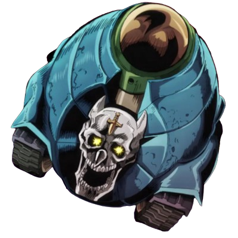
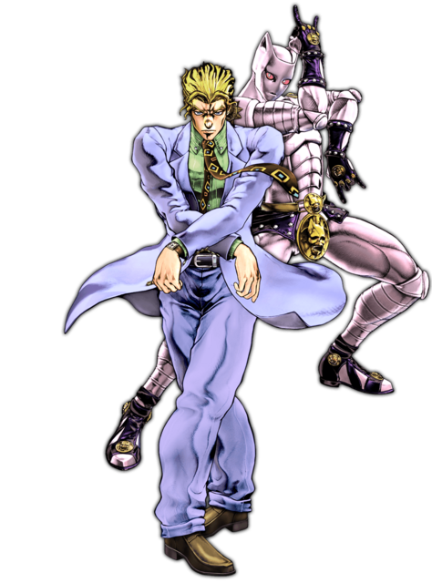

Backstory
Yoshikage Kira's backstory in JoJo's Bizarre Adventure Part 4: Diamond is Unbreakable delves deeper into his twisted psyche and the events that shaped his murderous tendencies. Despite his seemingly normal upbringing, Kira's obsession with women's hands began at a young age. This fixation grew into a compulsive desire to kill and collect the hands of his victims as trophies. His ability to lead a double life, balancing his dark urges with the facade of a typical salaryman, demonstrates his cunning and capacity for deception.Kira's Stand, Killer Queen, becomes an integral part of his modus operandi. With Killer Queen's power to turn anything it touches into a bomb, Kira can eliminate his victims discreetly and without leaving evidence behind. This ability not only aids in his killings but also serves to heighten the sense of danger and mystery surrounding him. Despite his monstrous actions, Kira remains dedicated to maintaining his version of a peaceful life. He meticulously chooses his victims, ensuring that their disappearances do not arouse suspicion. Kira's meticulousness and attention to detail highlight his advanced planning skills and the lengths he will go to preserve his facade.
As the events of Diamond is Unbreakable unfold, Kira's backstory is gradually revealed, shedding light on the depths of his depravity and the psychological complexities that drive him. His clashes with the protagonists serve to unravel his carefully constructed facade, exposing the true nature of his desires and motivations.

